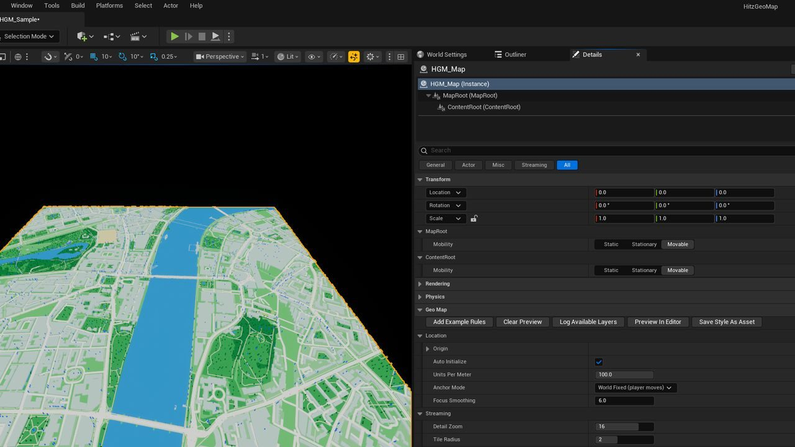
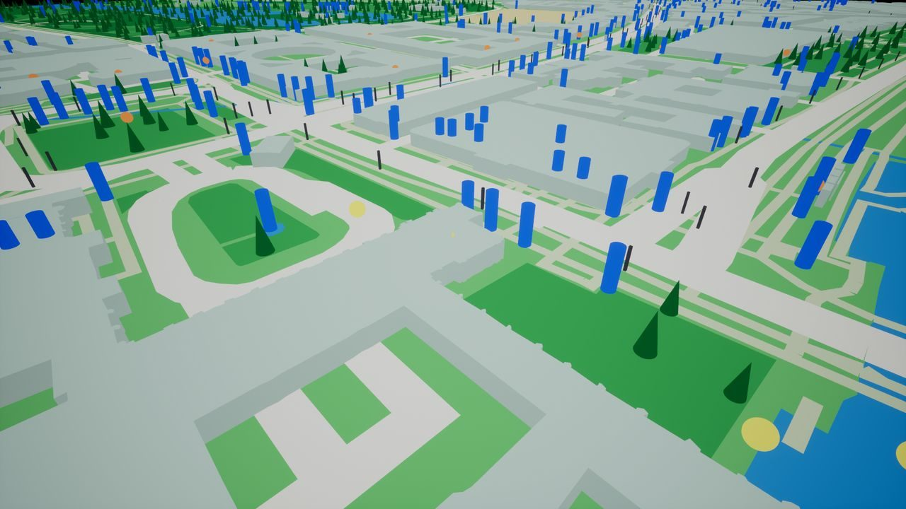
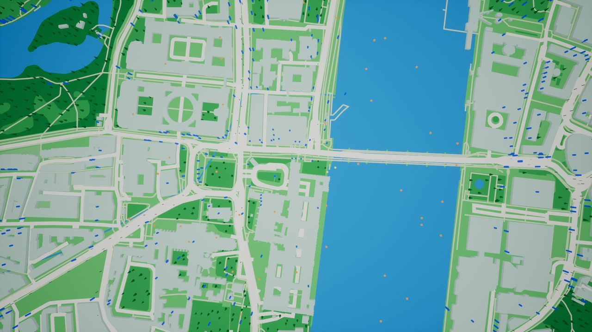

Independent project, published on Fab
Hitz GeoMap
An Unreal Engine 5 plugin that streams real roads, buildings, water and parks around the player's GPS position as playable geometry. Every feature works in Blueprint.

Overview
Hitz GeoMap turns open vector map tiles and a live position into geometry in an Unreal level, with your own meshes and actors placed on real places. It is built for location-based games.
My role
I designed, built and documented all of it, including the product site and setup guide.
Main responsibilities
- Streaming real-world geometry (roads, buildings, water, parks) around the player's GPS position, loading tiles ahead and unloading behind.
- Five map-provider presets (OpenStreetMap, VersaTiles, MapTiler, Stadia Maps, Mapbox) or a custom or self-hosted tile server.
- Thirteen styleable layers, changeable at runtime.
- Rule-based mesh placement and deterministic actor spawning on real points of interest.
- Android GPS, network location and compass, with jitter filtering.
Implementation
Tiles are cached on the device and detail level and tile radius can change during play. Spawns are the same on every device without a server, and carry stable IDs so collected actors can be blocked and saved. Any actor can be made usable through an interface, with reach measured in real metres, or pinned to a geographic coordinate. The editor simulates a position, with speed, heading and distance walked.
Links and media


